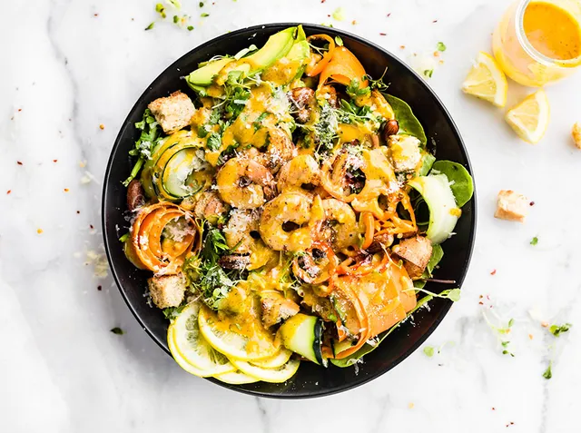

Spicy Shrimp Spinach Caesar Salad

Description
Spicy shrimp Caesar salad with spinach is a quick light meal for lunch or dinner! The spicy shrimp and kickin’ homemade Caesar dressing is key to making this salad shine! Tender shrimp tossed in chile powder, onion, and cayenne then baked crispy! A flavorful and healthy Caesar salad! Paleo option included.
This shrimp caesar salad recipe brings joy to my heart and is made with LOVE. Yep, there it is CORNY Cotter moment at it’s finest. Food is love.
Ingridients
Shrimp
- 1 egg yolk
- 1/2 tbsp spicy mustard
- 4 tbsp olive oil
- sea salt or kosher salt and pepper to taste
- 1/2 tsp chili powder
- Pinch of cayenne
- 1/2 to 1 tsp anchovy paste. (Substitute – 2 tsp capers mashed with garlic and a pinch of salt )
- 1-2 tsp minced garlic
- 1 tbsp Lemon juice
Spinach Salad
- Spinach
- Lettuce
- Zucchini
- Carrot
- Fresh Herbs
- Bell Peppers
- Avocado
- Splash of lemon
- Optional gluten free croutons
Steps
Shrimp
- You will need just a handful of some amazing shrimp, peeled, deveined, and ready to bake.
- Toss the shrimp in chili powder, avocado oil, and other spices. Bake it for just about 10 minutes and watch it sizzle. You could also use my sweet and spicy baked shrimp! Either work well for making Shrimp Caesar salad. Such simple good food.
- While the shrimp baking, you can whip up the rest of your salad
Spinach Salad
- Don’t go run off, homemade croutons are very easy to make. Especially gluten free croutons. Simply chop up some dry gluten free bread, toss in a little olive oil and garlic, then baked it for five minutes in the oven. You’ll love the crunch! Ya’ll, toasted garlic bread croutons are a must when it comes to Caesar salads, or panzanella salad bowls! Plus it’s resourceful.
- Toss together your spinach, add your vegetables fixings (sliced anyway), spicy baked shrimp, and then pour that caesar dressing on top! Parmesan to sprinkle.